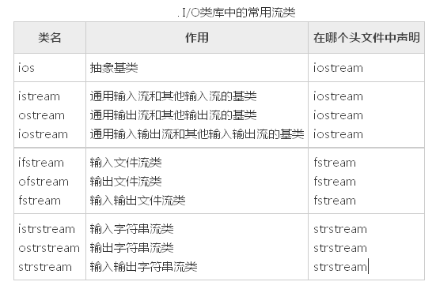

前言
字符串的处理及读写文件操作我一直都觉得是C/C++中最常用、学习耗时最多、效果不很理想的部分。今天在火车上总结总结。（20181227）
C++输入输出流
相关概念
1、C++输入输出包含以下三个方面的内容：
- 对系统指定的标准设备的输入和输出。即从键盘输入数据，输出到显示器屏幕。这种输入输出称为标准的输入输出，简称标准I/O。
- 以外存磁盘文件为对象进行输入和输出，即从磁盘文件输入数据，数据输出到磁盘文件。以外存文件为对象的输入输出称为文件的输入输出，简称文件I/O。
- 对内存中指定的空间进行输入和输出。通常指定一个字符数组作为存储空间(实际上可以利用该空间存储任何信息)。这种输入和输出称为字符串输入输出，简称串I/O。
2、C++中IO对C的扩展
- 在C语言中，用printf和scanf进行输入输出，往往不能保证所输入输出的数据是可靠的安全的。在C++的输入输出中，编译系统对数据类型进行严格的检查，凡是类型不正确的数据都不可能通过编译。因此C++的I/O操作是类型安全(type safe)的。
- C++的I/O操作是可扩展的，不仅可以用来输入输出标准类型的数据，也可以用于用户自定义类型的数据。
- C++通过I/O类库来实现丰富的I/O功能。这样使C++的输人输出明显地优于C语言中的printf和scanf，但C++的I/O系统变得比较复杂，增加学习成本。
- C++编译系统提供了用于输入输出的iostream类库。iostream这个单词是由3个部分组成的，即i-o-stream，意为输入输出流。
1
2
3
4
5继承图表：
ios->istream->iostream
->ostream->
ios是抽象基类，由它派生出istream类和ostream类，两个类名中第1个字母i和o分别代表输入(input)和输出(output)。istream类支持输入操作，ostream类支持输出操作，iostream类支持输入输出操作。iostream类是从istream类和ostream类通过**多重继承而派生的类**。

- C++对文件的输入输出需要用ifstrcam和ofstream类，两个类名中第1个字母i和o分别代表输入和输出，第2个字母f代表文件 (file)。ifstream支持对文件的输入操作， ofstream支持对文件的输出操作。类ifstream继承了类istream，类ofstream继承了类ostream，类fstream继承了 类iostream。
1
2
3
4
5
6继承图表：
ios->istream->ifstream
ios->istream->iostream->fstream
ios->ostream->iostream->fstream
ios->ostream->ofstream
(这几个继承图后期再改吧，先写个初稿)
头文件说明
1、iostream包含了对输入输出流进行操作所需的基本信息。
2、fstream用于用户管理的文件的I/O操作。
3、strstream用于字符串流I/O。
4、stdiostream用于混合使用C和C + +的I/O机制时，例如想将C程序转变为C++程序。
5、iomanip在使用格式化I/O时应包含此头文件。
在iostream头文件中定义的流对象
在iostream头文件中定义的类有 ios，istream，ostream，iostream，istream _withassign， ostream_withassign，iostream_withassign等。
在iostream头文件中不仅定义了有关的类，还定义了4种流对象，
| 对象 | 含义 | 对应设备 | 对应的类 | c语言中相应的标准文件 |
|---|---|---|---|---|
| cin | 标准输入流 | 键盘 | istream_withassign | stdin |
| cout | 标准输出流 | 屏幕 | ostream_withassign | stdout |
| cerr | 标准错误流 | 屏幕 | ostream_withassign | stderr |
| clog | 标准错误流 | 屏幕 | ostream_withassign | stderr |
使用案例：
在iostream头文件中定义以上4个流对象用以下的形式（以cout为例）：
ostream cout ( stdout);
在定义cout为ostream流类对象时，把标准输出设备stdout作为参数，这样它就与标准输出设备(显示器)联系起来，如果有
cout <<3;
就会在显示器的屏幕上输出3。
- 在iostream头文件中重载运算符
“<<”和“>>”本来在C++中是被定义为左位移运算符和右位移运算符的，由于在iostream头文件中对它们进行了重载， 使它们能用作标准类型数据的输入和输出运算符。所以，在用它们的程序中必须用#include命令把iostream包含到程序中。#include <\iostream>
>>a表示将数据放入a对象中
\<< a表示将a对象中存储的数据拿出。
标准I/O流
标准I/O对象:cin，cout，cerr，clog。
cout流对象
cout是console output的缩写，意为在控制台（终端显示器）的输出。
1、cout不是C++预定义的关键字，它是ostream流类的对象，在iostream中定义。 顾名思义，流是流动的数据，cout流是流向显示器的数据。cout流中的数据是用流插入运算符“<<”顺序加入的。如
cout<<”I “<<”study C++”<<”very hard. << “wang bao ming “;
按顺序将字符串”I “, “study C++ “, “very hard.”插人到cout流中，cout就将它们送到显示器，在显示器上输出字符串”I study C++ very hard.”。cout流是容纳数据的载体，它并不是一个运算符。人们关心的是cout流中的内容，也就是向显示器输出什么。
2、用“cout<<”输出基本类型的数据时，可以不必考虑数据是什么类型，系统会判断数据的类型，并根据其类型选择调用与之匹配的运算符重载函数。这个过程都是自动的，用户不必干预。如果在C语言中用prinf函数输出不同类型的数据，必须分别指定相应的输出格式符，十分麻烦，而且容易出错。C++的I/O机制对用户来说，显然是方便而安全的。
3、cout流在内存中对应开辟了一个缓冲区，用来存放流中的数据，当向cout流插人一个endl时，不论缓冲区是否已满，都立即输出流中所有数据，然后插入一个换行符，并刷新流（清空缓冲区）。注意如果插人一个换行符”\n“（如cout<< a<<”\n”），则只输出和换行，而不刷新cout流(但并不是所有编译系统都体现出这一区别）。
4、在iostream中只对”<<”和”>>”运算符用于标准类型数据的输入输出进行了重载，但未对用户声明的类型数据的输入输出进行重载。如果用户声明了新的类型，并希望用”<<”和”>>”运算符对其进行输入输出，按照重运算符重载来做。
cerr流对象
cerr流对象是标准错误流，cerr流已被指定为与显示器关联。cerr的作用是向标准错误设备(standard error device)输出有关出错信息。
- cerr与标准输出流cout的作用和用法差不多。但有一点不同：cout流通常是传送到显示器输出，但也可以被重定向输出到磁盘文件，而cerr流中的信息只能在显示器输出。当调试程序时，往往不希望程序运行时的出错信息被送到其他文件，而要求在显示器上及时输出，这时应该用cerr。cerr流中的信息是用户根据需要指定的。
clog流对象
clog流对象也是标准错误流，它是console log的缩写。
- 它的作用和cerr相同，都是在终端显示器上显示出错信息。
- cerr是不经过缓冲区，直接向显示器上输出有关信息，而clog中的信息存放在缓冲区中，缓冲区满后或遇endl时向显示器输出。
输入输出流编程语法
标准输入流 cin
1 | cin.get() //一次只能读取一个字符 |